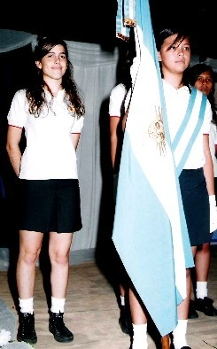
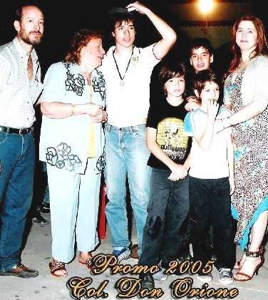

Con el ala dañada
Hace poco publicaba en el diario local y en algunas periódicos y portales de Internet, acerca de lo que me tocado vivir como madre de un niño especial y de lo que pretendo
para ésta, cada vez más grande, comunidad especial.
Creo que todos, en algún u otro aspecto, somos seres con iguales características que aquéllos nominados “con capacidades diferentes”; y las personas que no lo asumen,
son quienes se niegan a ver una realidad que en cualquier momento, puede tocarles de la forma más cruel.
Tarde supe lo que estaba sucediendo en mi familia y tarde me di cuenta que todos -sin distinción- nos damos con la cabeza contra la pared una y otra vez…
Porque el ser humano, por naturaleza, niega lo que no entiende y no se atreve, ni siquiera a intentar entenderlo, si bien siempre pueden existir raras excepciones
en este sentido. Sin embargo es común observar a maestros, médicos, profesores, alumnos, papás de otros niños (creo que estos últimos son los más crueles) quienes
no quieren que sus hijos, compartan con chicos diferenciales.
Simón es el tercero de 5 niños que tuve. Al momento de su nacimiento rogué que lo pusieran en incubadora, ya que según mis cálculos, era un bebé de 36 semanas.
No obstante, el pediatra que lo atendió, me dijo luego de un exhaustivo examen, de que era un niño normal; pero “haragán”.
Sin otros problemas más que su dificultad para hablar, de las cuales mi familia se reía, ya que mi esposo comenzó a hablar recién a los 6 años…
fui dejando pasar
el tiempo, viendo cómo prosperaba.
Lo inscribí en la Escuela que está cerca de mi casa, junto con sus hermanos. Vivimos en una comunidad Orionita (Movimiento de caridad creado
por el Sacerdote
cristiano católico romano, conocido como “Don Orione).
Tuvo una evolución normal, pero se notaba un marcado problema de aprendizaje, así que, le puse una maestra particular y terminó tercer grado con
“APROBÓ LOS LOGROS ESTABLECIDOS” hasta en inglés y computación.
Por entonces, comencé a consultar a neurólogos y psicopedagogos, para explorar si le encontraban algo que requiriera atención. Todos los estudios resultaban
con normalidad o con una pequeña alteración de ondas cerebrales: lo que solamente indicaba falta de madurez, ya que no había ningún indicio de lesión subcortical
(Esto es daño cerebral. Por lo general, los que tienen algún tipo de problema de este género, son niños que convulsionan reiteradamente y Simón jamás convulsionó).
Habíamos comprado una perrita Rottweiler como guardiana del hogar y en marzo del 2001, mi hijo Marcello (el 4to.) tuvo un accidente con ésta. Jugando
e involuntariamente, ella le rasgó la córnea del ojo derecho.
Ya que menciono este suceso, debo contarles algo acerca de mí…ya que mi vida no se ha caracterizado por mostrar rasgos fáciles…
No debo quejarme, pero fue duro desde el comienzo. Mi madre se fue de casa y por entonces mi padre tuvo que luchar muchísimo para sacar
adelante y en forma
solitaria cuatro niñas que habíamos quedado a su cuidado. Sin embargo, nos enseñó que “la fe mueve montañas”.
Estuve pupila en un colegio desde los 8 años y cuando por fin, la vida me ofrecía –siendo apenas una adolescente- una familia normal, él falleció. Fue muy
dificultoso salir adelante, pero tenía un modelo inigualable:
Lo que mi padre había forjado a fuego, en mi corazón.
Simón empezaba 4to grado con un maestro y autoridades nuevas en el colegio.
¿Que pasó? No lo puedo explicar… lo que si sé, es que de allí en más tuve que afrontar mil y un pedidos de la institución, mientras atendía a otro niño, Marcello,
internado durante meses por el accidente ocular.
Informe que llevaba, informe que era recusado. No les servían ni los certificados de Salud Pública, ni de los neurólogos particulares (que indicaban continuidad escolar),
los papeles comenzaron a extraviarse…
A mi hijo se lo sentó en un rincón… no se le atendió más. No le dieron adaptación curricular, no pidieron asistencia especial al estado en virtud de ser un
colegio con
subvención nacional ( al no contar con un gabinete de profesionales para atender estos niños, como la ley lo establece). Solamente, me pedían informe tras informe.
No hay médico que no lo haya visto…
A más, en mi torpeza, por no conocer bien el tema, cometí muchos errores y les diré cual fue el peor de ellos:
En febrero del 2004, comenzamos tratamiento con un médico que realizó mapeos dígitos computarizados, con el cerebro virgen y luego con drogas que nos llevó unos
dos meses. Cuando terminamos allí y en vista de que había surgido como resultado, una alteración de la onda encefalográfica llamada “deltha”, comencé a peregrinar por
el área de Salud Pública, haciendo largas esperas desde la madrugada, para conseguir un Certificado Nacional de Discapacidad; el que no me fue otorgado por esa vía.
Tuve que recurrir, cansada y golpeada por los avatares de estas circunstancias a Acción Social de la Nación donde el 4 de julio de ese año, por fin me lo otorgaron.
Según consta en el Certificado, mi hijo tiene dificultad de lecto-escritura por secuela peri natal.
Salí con el certificado para presentarlo a la Clínica, a la que estábamos adheridos, por un sistema de medicina prepago, para que lo hicieran partícipe de los
beneficios que la
ley contempla para estos niños. A la semana, recibí una carta documento donde se me notificaba la baja inmediata para todo el grupo familiar, por haber falseado el
ingreso a la misma. Ningún argumento sirvió para que me entendieran.
Tenía más de 20 años en ese sistema; por lo tanto, el niño nació bajo cobertura Social. Tuve que recurrir a la Justicia Federal, la cual en tres días me dio la razón.
Pero mientras tanto…Simón perdía más y más la noción de “ESCUELA”.
Al fin conseguí que la “prepaga” me abonara lo que le correspondía para acceder llevarlo al Instituto de atención a la Diversidad (IAD) a fin que le efectuaran
una evaluación. Durante tres meses, de mañana viajaba 15 Km. para ir al instituto, venía a casa e iba al colegio Don Orione y luego de éste, viajaba nuevamente
hasta la Institución para seguir la evaluación.
Hablo del Chaco (Zona Norte, calurosa y húmeda de la República Argentina) en meses de 40º de calor. Resultado: terminamos un 2004 destruidos.
No sólo Simón, TODA MI FAMILIA estaba comprometida…
Lo que más me impactó, fue enterarme de que la Dirección de Enseñanza General Básica 1 y 2 del Colegio Don Orione, sugirió a las autoridades del Instituto
de atención a la Diversidad, que condicionaría la Inscripción del niño (a pesar del informe neurológico), siempre y cuando el pequeño asistiera todo el receso
escolar a ese instituto. Allí tuve mi primer ataque. Alteración neurovegetativa severa. El médico nos examinó a ambos y dictaminó: Simón= receso
escolar absoluto. La madre = tratamiento prolongado.
El 2005 me tomó con un apoderado legal comprensivo, quien me pidió una maestra integradora; pero, los problemas comenzaron de nuevo.
Si pasaba algo, la directora corría con un cuadernillo detrás de mi hijo. Todo lo que sucedía era culpa de Simón. Quiero aclararles que a esta altura,
yo quería sacarlo del colegio; pero él insistía que quería ir allí con sus hermanos y compañeros desde el jardín de infantes.
Acordé con el apoderado legal que le llevaría otro informe psicopedagógico a realizar en el receso escolar de invierno; pero no pude llevarlo a cabo,
ya que mi hijo,
aquel que se accidentara en la vista, sufrió un golpe en el mismo lugar accidentado y en el mismo colegio. Nadie se percató y padeció “una uveítis
hipertensiva,
glaucoma refractario, y ulceración de cornea”. La infección estaba a punto de tomar el nervio óptico y en lugar de atender a Simón, debí viajar a Buenos
Aires de urgencia a operar a Marcello: Si la infección pasaba al cerebro, mi hijo se moriría.
Cuando volví, Simón preparaba ansioso su mochila para el viaje de fin de primaria. Un campamento en la Ciudad de Tucumán, donde asistirían diez
escuelas (una, de niños con capacidades especiales). Simón, ya había viajado con el colegio, con motivo de efectuar la catequesis (preparación que realiza
la Iglesia cristiana católica romana a niños que tomarán la “Primera Comunión”) y había participado en cuatro campamentos, ya que su afección no lo
limita en estos casos y no significaba peligro ni para él, ni para sus pares.
Pero, esta vez fue abiertamente discriminado. No por sus pares, no por sus maestros…horror de horrores, por los Directivos de la Enseñanza General
Básica 1 y 2, ya que convencieron al Director Católico, que no lo autorizara a viajar, alegando mi falta de responsabilidad. No me permitieron
acompañante. Un profesor del mismo se ofreció a cuidarlo por que lo conoce desde que nació, pero también el resultado fue negativo.
Amigos…tengo 5 hijos…mi hija es escolta de bandera y los otros son excelentes alumnos, todos en el mismo colegio…..por qué Simón no; y
los otros chicos sí. En mi casa y en otros ambientes es un niño normal,
¿Qué contesta una madre a un niño cuya comprensión es normal, pero no entiende la exclusión?
El daño que le han provocado a mi hijo, superó todo lo imaginable.
Pidió, rogó, imploró, y luego soledad, autismo, regresión. Ahora tiene algunos trastornos de conducta y se aísla con demasiada frecuencia, con una actitud
desconocida para nosotros, para quienes siempre lo tratamos como uno más en la familia; a esto se suma, sus claros indicios de preadolescencia.
Por eso, acuso a la perversidad manifiesta de las personas que ensucian con sus actos la imagen de Don Orione, de sus obras de caridad y de su carisma.
No necesariamente pido que se le enseñe a mi hijo. Pido para él, integración social, apertura hacia la comunidad, sociabilizarlo y reforzar su don de gentes, que es inmenso.
Aclaro que desde el 4to. Grado, Simón no tiene ningún papel de la escuela; ninguna libreta, ningún informe para el Ministerio de Educación de la Provincia
o de la Nación, solamente los comprobantes de pago como alumno regular del colegio, legajo 107/02.-
Dios dice que debemos perdonar. Pero, disculpen, si el daño fuera hacia mi persona, yo, con mis capacidades diferentes y mis 44 años, tal vez tendría la
posibilidad de perdonar, pero, aquí se ha tocado a un menor (y a quien sabe cuántos más).
Se ha lastimado a un niño, que no tiene la culpa de no poder retener letras….
Se ha manifestado plena discriminación, sabiendo que él prácticamente nació en esas aulas.
¿Cuántos casos más de este tipo debemos tolerar? Cuánto más discriminaremos? ¿Cuándo levantaremos las voces para pedir justicia para nuestros
niños (y también adultos) especiales? ¿Cuánto más haremos la “vista gorda”?
Créanme, hoy me ha tocado a mí pelear por mi hijo…mañana le puede pasar a cualquiera y como madre, no quiero que ninguna persona sufra discriminaciones.
Somos nosotros los que tenemos las herramientas.
NO DESAMPAREMOS A NUESTROS SERES ESPECIALES.
Tal vez piensen, Simón es un niño que tiene quien lo proteja... es cierto; pero si yo, no hago pública esta situación, por cada Simón debe de haber cientos
de niños que no tienen quien denuncie y pelee por ellos.
Por eso, todas las mañanas me levanto y agradezco a Dios por haberme dado armas para cuidar mis niños –todos ellos- y la oportunidad de no callar, e
insistir por todos los medios.
Dios dijo: “no des lo que no quieres recibir….”, por esa razón, dedico todo mi tiempo libre a luchar en una tarea titánica. Un grano de arena, más otro,
más otro y podremos suprimir sucesos tan lamentables como les he contado.
"Dushinka" E.mail: panellisa@infovia.com.ar
Ruth Noemí Kordysz de Panelli
 |
 |
|---|